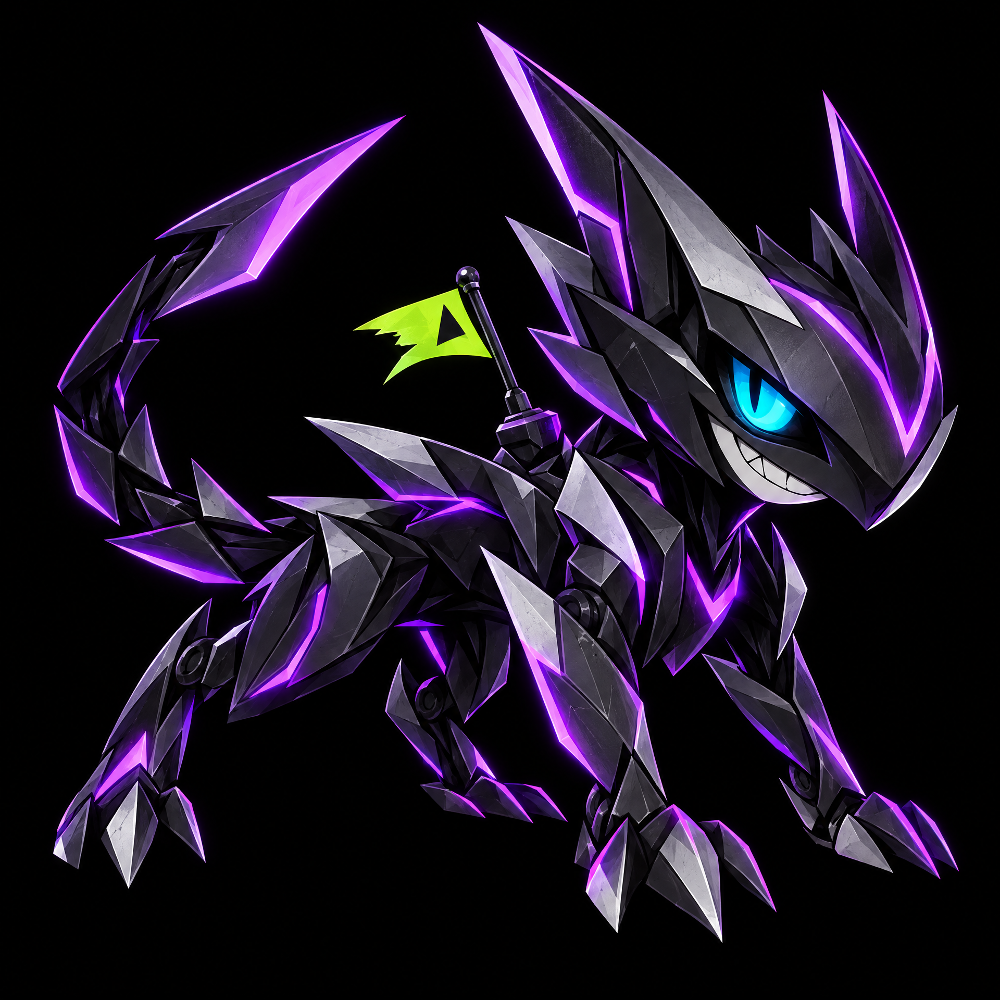
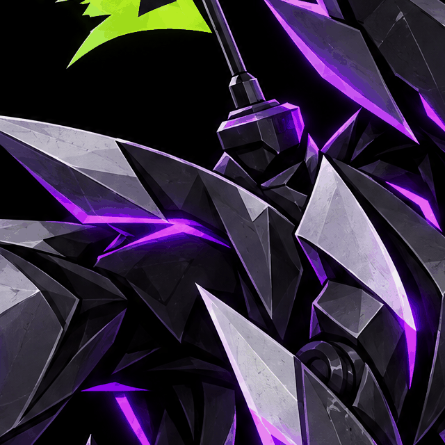

← Back to Promo LabEverything

ASSET INDEX / LOCAL FILES
Everything
is a file.
Every promotional visual is stored locally in the package for GitHub Pages or Cloudflare Pages. Nothing here depends on a hotlinked image host.

